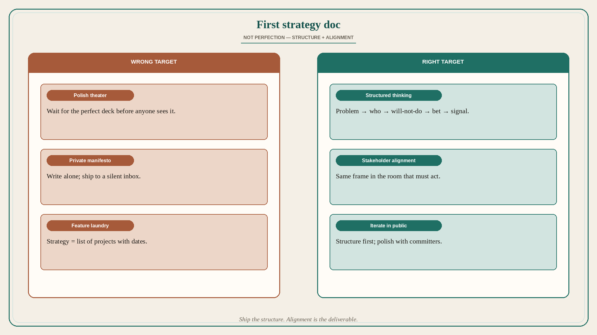

Your first strategy doc is structured thinking + stakeholder alignment
Source: George / prodmgmt.world (@nurijanian)
original post
What it claims
Your first product strategy doc is not about perfection. It is about structured thinking plus stakeholder alignment. After helping fellow PMs craft their first strategy, the author points to an exact process that works — but the usable claim in the API text is the bar and purpose: not a polished artifact, but a shared structure that gets stakeholders into the same frame. (Source post is primarily a carousel/thread image — the detailed process bullets live in the image and are not reconstructed here.)
Why it matters for a PO
A new PO often freezes on “the strategy deck” until it is perfect, or ships a private manifesto nobody signed. The first doc’s job is to force structured thinking and put the room in alignment — not to win a writing contest. Ship the structure; iterate the polish with the people who must act on it.
3 takeaways
- First strategy doc ≠ perfection; it is structured thinking + stakeholder alignment.
- The artifact exists to get shared frame, not to impress.
- Do not wait for a perfect deck; get the structure in front of the people who must commit.
Practice this week
Write a one-page strategy with only structure: problem, who we serve, what we will not do, bet for this quarter, how we will know. Walk it with two stakeholders this week. Do not add slides until those two can restate the bet in their own words.